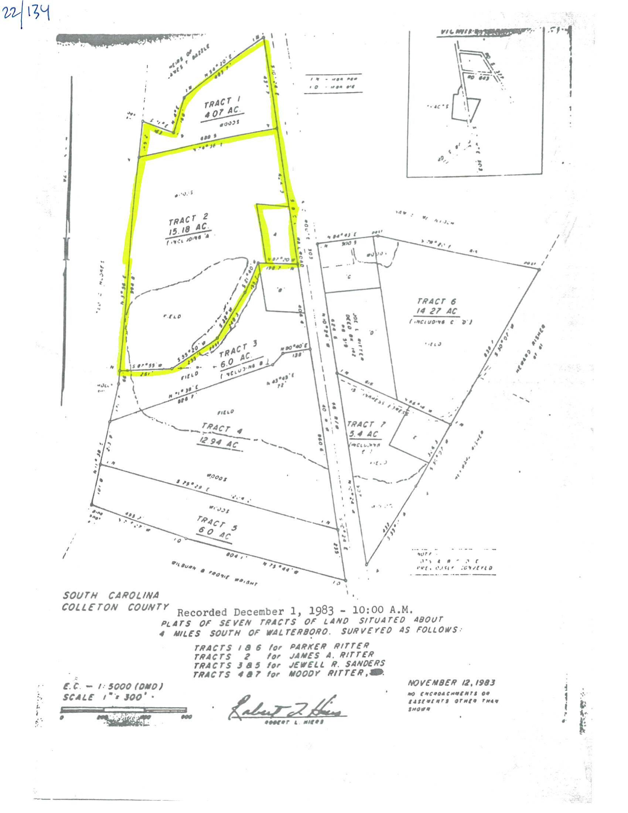

About the Property
- Status:
- Available
- Price:
- $300,000
- Acres:
- ±19.3 acres (19.26 per county records)
- Price Per Acre:
- about $15,577
- Type:
- Farm, Hunting Land, Recreational Land, Homestead/Fixer-Upper House, Orchard
- Address:
- 4196 Green Pond Hwy
- City, State:
- Walterboro, South Carolina
- County:
- Colleton
- Zip Code:
- 29488
- Parcel/TMS:
- 209-00-00-028.000
- Zoning:
- RD2 (Rural Development 2)
- Flood Zone:
- X (outside the special flood hazard area)
- Lat/Long:
- 32.843147, -80.646942
- Road:
- Paved
- Utilities:
- Electricity, well, septic
- House:
- Ranch, ~1,849 sq ft, 3 bed / 1 bath, built c. 1935 (fixer-upper)
- Presented By:
- Owner
- Phone:
- (843) 737-1593
- Showings:
- By appointment
This ±19-acre property (19.26 acres per county records) sits in rural Walterboro, South Carolina, east of I-95 with convenient interstate access and about 10 minutes from town. It is on a paved road with electricity, well and septic, zoned RD2 (Rural Development 2), and in Flood Zone X, outside the special flood hazard area.
The land mixes open, mowed fields with mature woods of pine and hardwood. A small stream runs through the trees, and trail cameras on the property have captured wild turkeys and whitetail deer.
The House
An existing ranch-style home of about 1,849 sq ft (3 bedrooms, 1 bath, built around 1935) sits among large shade trees with a covered front porch. It is a fixer-upper that needs a new roof and interior work.
Orchard & Plantings
The property has young fruit trees, trellised planting rows and established flowering azaleas. The Bradford pears on the property are ornamental trees, not fruit trees.
- ±19 acres in Colleton County
- Zoned RD2 · Flood Zone X
- Paved road · electricity, well, septic
- c. 1935 ranch home, ~1,849 sq ft, 3 bed / 1 bath
- Open mowed fields
- Orchard plantings and trellised rows
- Mature pines and hardwoods
- Turkey and deer on trail cameras
Photo Gallery
Tap any photo to enlarge.


Videos
Survey / Plat

Location
4196 Green Pond Hwy, Walterboro, SC 29488 (Colleton County). Get directions →